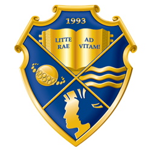

Університет імені Альфреда Нобеля
Гаряча лінія
0-800-75-51-57

Положення про відділ аспірантури та докторантури
Порядок підготовки здобувачів вищої освіти ступеня доктора філософії та доктора наук в Університеті імені Альфреда Нобеля здійснюється за науковими економічними та педагогічними спеціальностями.
Згідно Наказу Міністерства освіти і науки України № 389 від 8.04.2016 р. та на підставі рішень Ліцензійної комісії МОН України (протокол № 3/2 від 08 квітня 2016 року) в Університеті імені Альфреда Нобеля розширили провадження освітньої діяльності на третьому освітньо-науковому рівні (доктор філософії) за такими спеціальностями:
Перелік спеціальностей, відкритих у докторантурі Університету імені Альфреда Нобеля, рішення Вченої ради, протокол № 5 від 30 червня 2016 року
Згідно з рішенням Атестаційної колегії Міністерства освіти і науки України від 30 червня 2015 року в Університеті імені Альфреда Нобеля створено спеціалізовану вчену раду Д 08.120.01 з правом прийняття до розгляду та проведення захистів дисертацій на здобуття наукового ступеня доктора (кандидата) економічних наук за спеціальностями:
09 березня 2016 року в Університеті імені Альфреда Нобеля створено спеціалізовану вчену раду К 08.120.02 з правом прийняття до розгляду та проведення захистів дисертацій на здобуття наукового ступеня кандидата педагогічних наук за спеціальністю 13.00.04 – Теорія і методика професійної освіти.
Ефективність роботи з 2010 по 2017 роки в спеціалізованій вченій раді Д 08.120.01 в Університеті імені Альфреда Нобеля характеризується захищеними аспірантами, здобувачами та співробітниками 50 дисертацій, із них 2- докторські (21 – викладачами, 36 - аспірантами та здобувачами університету).
За 2015-2017 рр. роботи спеціалізованої вченої ради К 08.120.02 було захищено вісімнадцять кандидатських дисертацій за спеціальністю 13.00.04 – Теорія і методика професійної освіти, із них (1 – викладачем, 4 – аспірантами та здобувачами університету).